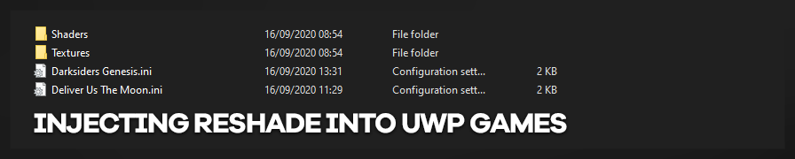
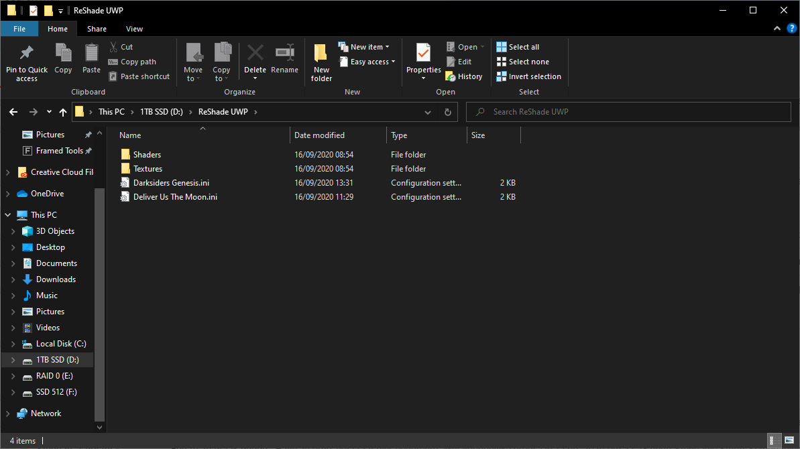

本指南将帮助你向大多数通用 Windows 平台（UWP）游戏注入 ReShade，即 Windows 商店和 PC Game Pass 游戏。请注意，并非所有 UWP 游戏都支持此操作，部分游戏受到保护（如《极限竞速：地平线 4》，注入 .dll 后会强制退出）。
工具
你需要 crosire 的 DLL 注入器。
或
你可以使用官方网站的 ReShade 安装程序。
在 Xbox 应用/Game Pass 中使用 ReShade
过去，要让 ReShade 与 UWP 协同工作需要多个难度不一的步骤，但微软此后修改了其流程，默认允许所有用户直接访问游戏文件。因此，在 Game Pass 游戏中使 ReShade 正常工作所需的步骤大大简化了。
具体步骤可能略有不同，但基本流程保持一致：
- 确定安装路径。你可以点击 Xbox 应用左上角的头像图标 > 设置 > 常规，在「游戏安装选项」部分设置游戏文件夹目标位置，然后正常安装游戏。
-
根据你打算使用的方式，下一步将有所不同：
- 手动安装 - 将文件放置在游戏 .exe 所在的同一文件夹中
- ReShade 安装程序 - 启动安装向导并浏览至游戏文件夹，此时你需要找到
gamelaunchhelper.exe，因为使用游戏本身的 .exe 很可能会产生错误。
成功部署 ReShade 后，启动游戏，即可像往常一样正常使用。
你可能需要进行手动安装，因为 Windows 有可能不允许你在安装 ReShade 时选择游戏的 .exe。此时，请用 WinRAR 打开 ReShade 安装程序，取出 ReShade64.dll，将其重命名为可注入游戏 exe 的名称（如 dxgi.dll），然后将其放入游戏文件夹（具体来说，与游戏 .exe 位于同一路径下）。
请注意，ReShade 在 UWP 游戏中存在一些已知的小兼容性问题，最典型的是 ReShade 界面的输入会发生重复（点击会被响应两次，在输入框中输入会重复录入等）。这些问题较为轻微且容易规避，但确实会发生。
ReshadeForUWP 工具
此外，这款带有 GUI 界面的工具可以帮助你以更少的手动操作将 ReShade 注入 UWP / PC Game Pass 游戏。它会询问你软件包名称（以及自定义进程名称，如有），并通过 appxmanifest.xml 文件获取游戏的元数据，然后生成一个 BAT 文件，用于将 ReShade 注入游戏并启动它。此外，它还可以选择性地通过下载/解压所有 FX 文件并生成 Reshade.ini 文件来自动配置一个可用的 ReShade 环境。
以下内容在某些情况下可能仍然有效，但总体上已被视为过时。在尝试为 UWP 游戏配置 ReShade 时，我们建议按照上方的说明操作。我们保留以下指引，以备需要备用方法时参考。
如何向 UWP 游戏注入 ReShade
- 将包含 UWP 注入器的 zip 文件解压到桌面或驱动器上的某个文件夹（例如：ReShadeUWP）。
- 启动你想使用 ReShade 的游戏。
- 打开任务管理器，查看游戏使用的进程名称（例如：《Deliver Us The Moon》对应的是
MoonMan-Win64-Shipping.exe）。 - 关闭游戏。
- 打开命令提示符，导航到 UWP 注入器所在的文件夹（你可以在地址栏中输入
cmd，这样会在当前位置打开命令提示符）。 - 输入
inject.exe 进程名称.exe。 - 启动游戏。
ReShade 现在应该已被注入。
高级 UWP ReShade 注入
如果你觉得上述流程过于繁琐——因为每次启动游戏都要重复这些操作——你可以按照以下步骤制作一个能自动启动游戏并注入 ReShade 的脚本。
准备工作
- 将包含 UWP 注入器的 zip 文件解压到桌面或驱动器上的某个文件夹（例如：ReShadeUWP）。
- 新建一个文件夹，以游戏名称命名（例如：ReShade-DeliverUsTheMoon），将之前解压的内容复制进去。
- 如果你此前曾在某个 Steam 游戏中安装过 ReShade，可以将着色器和纹理复制到指定文件夹（详见 ReShade 仓库部分）。
查找游戏可执行文件和应用程序 ID
- 通过 Windows 商店或 XBOX Game Pass 应用下载游戏
- 如果桌面上有快捷方式，右键点击并记录目标路径（例如：WiredProductions.DeliverUsTheMoon...）
- 在 PowerShell 中输入
get-appxpackage > C:\Users\<你的用户名>\Desktop\UWP_Apps_List.txt - 打开该文件，搜索之前记录的目标路径
- 你应该会看到如下内容：
Name : WiredProductions.DeliverUsTheMoonWin10
Publisher : CN=5D8B0615-AEFA-4F14-AD65-C4F7D3A73F91
Architecture : X64
ResourceId :
Version : 1.4.44.0
PackageFullName : WiredProductions.DeliverUsTheMoonWin10_1.4.44.0_x64__hxzk6evwjr6sy
InstallLocation : C:\Program Files\WindowsApps\WiredProductions.DeliverUsTheMoonWin10_1.4.44.0_x64__hxzk6evwjr6sy
IsFramework : False
PackageFamilyName : WiredProductions.DeliverUsTheMoonWin10_hxzk6evwjr6sy
PublisherId : hxzk6evwjr6sy
IsResourcePackage : False
IsBundle : False
IsDevelopmentMode : False
NonRemovable : False
Dependencies : {Microsoft.DirectXRuntime_9.29.952.0_x64__8wekyb3d8bbwe, Microsoft.VCLibs.140.00.UWPDesktop_14.0.29016.0_x64__8wekyb3d8bbwe}
IsPartiallyStaged : False
SignatureKind : Store
Status : Ok
- 记录 PackageFamilyName。在本例中为：
WiredProductions.DeliverUsTheMoonWin10_hxzk6evwjr6sy - 将 InstallLocation 路径复制粘贴到资源管理器中打开（
C:\Program Files\WindowsApps\WiredProductions.DeliverUsTheMoonWin10_1.4.44.0_x64__hxzk6evwjr6sy） - 打开
appxmanifest.xml，记录 Application ID（Application Id="App"） - 进入游戏可执行文件所在的文件夹。在本例中为：
C:\Program Files\WindowsApps\WiredProductions.DeliverUsTheMoonWin10_1.4.44.0_x64__hxzk6evwjr6sy\MoonMan\Binaries\Win64\ - 记录 exe -> MoonMan-Win64-Shipping.exe
如果你发现文件上有小锁图标，则说明该游戏受内存保护，无法进行注入。
创建 PowerShell 注入脚本
- 启动 PowerShell ISE
- 在脚本部分先输入
CD\并按回车 - 如果 ReShade 文件夹所在驱动器不是 C 盘，请输入其驱动器盘符并按回车
- 接着输入 CD 和 ReShade 注入器所在的文件夹路径（
CD D:\ReShadeUWP） - 输入
start-process -filepath inject.exe，后跟游戏可执行文件名称（Start-Process -FilePath inject.exe MoonMan-Win64-Shipping.exe） - 你需要再启动一个资源管理器进程来启动游戏，因此输入
Start-Process -filepath explorer.exe shell:appsFolder\PackageFamilyName!Application Id - 你的注入与启动脚本已准备就绪
你的脚本应如下所示
Cd\ D: Cd 'D:\ReShade-DeliverUsTheMoon\' Start-Process -FilePath inject.exe MoonMan-Win64-Shipping.exe Start-Process -filepath explorer.exe shell:appsFolder\WiredProductions.DeliverUsTheMoonWin10_hxzk6evwjr6sy!App
- 将其保存至安全位置
要执行脚本，请右键点击并选择「使用 PowerShell 运行」。
ReShade 仓库
由于无法在 UWP 游戏文件夹中安装或复制文件，以下是我们将所有着色器和纹理统一存放在单一文件夹中的方法。
- 首先，如果你已将着色器和纹理复制到指定文件夹，并向 UWP 游戏注入了 ReShade，则会在 ReShade UWP 文件夹中生成一个
reshade.ini文件（例如：D:\ReShade-DeliverUsTheMoon\） - 打开
reshade.ini，修改以下行以反映你的当前配置
CurrentPresetPath=D:\ReShade UWP\Deliver Us The Moon.ini EffectSearchPaths=.\,D:\ReShade UWP\Shaders,D:\ReShade UWP\Shaders\OtisFX TextureSearchPaths=.\,D:\ReShade UWP\Textures
我这边是这样的效果。

要更新 ReShade 版本，只需从 reshade.me 下载安装程序，用 WinRar 打开后复制并替换为新的 ReShade64.dll 即可。